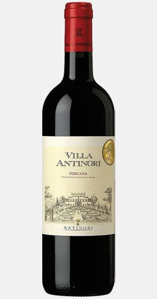

Nuestro Productos

CHIANTI DOCG 2012 - Scuderia Italia
Este es uno de los vinos por excelencia que simboliza la Toscana y el Made in Italy en el mundo. Tiene su origen en el corazón de la Toscana y su producción se rige por estrictas leyes que protegen sus estándares de calidad. Obtenido principalmente a partir de uvas Sangiovese y, en menor medida, de otras variedades de uva tinta, tiene un vivo color rojo rubí que tiende al granate con el envejecimiento. Scuderia Italia ha optado por embotellar únicamente 2004 botellas de Chianti cosecha 2012, galardonado con la Medalla de Oro por la revista internacional Gilbert & Gaillard.
Precio: U$S 23

Toscana - Italia Tinto tranquilo
Color: Rojo intenso. Aroma: En nariz es intenso y complejo, caracterizado por notas de bayas como el arándano y la ciruela combinadas con toques de avellanas tostadas, especias y vainilla. Sabor: En boca es con cuerpo y redondo, con taninos suaves y aterciopelados, largo y sápido.
Precio: U$S 33